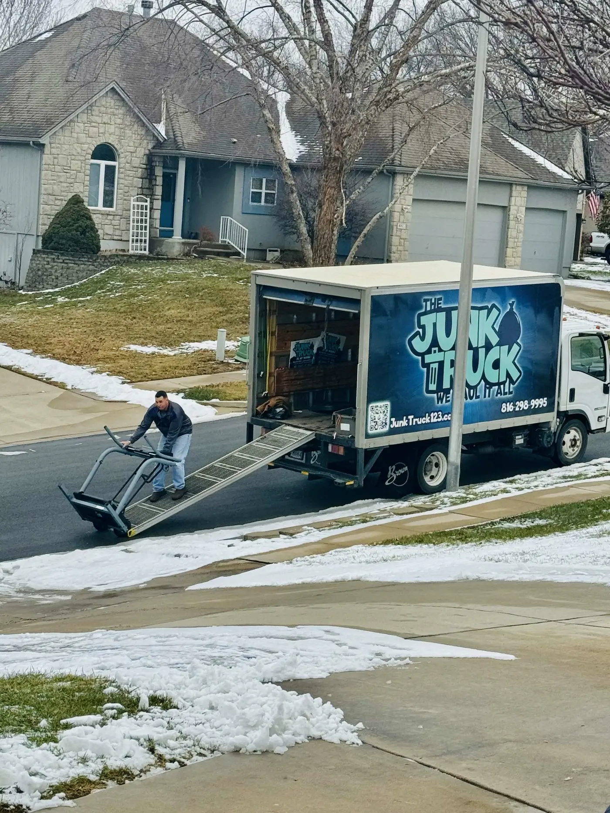

The Ultimate Garage Cleanout Checklist
A weekend-ready checklist for reclaiming your garage — what to keep, what to toss, what to haul away.

Most garages in Kansas City are storing about 30 percent junk and 70 percent stuff people forgot they owned. A weekend is enough time to flip that ratio. Here's the same checklist our crew uses when a homeowner asks us to take a garage from packed to parkable.
Before you start: the 4-pile rule
Don't try to make decisions item by item — you'll burn out by lunch. Instead, set up four zones in the driveway. Every single thing in the garage gets dropped into one of these:
- Keep — actively used in the last 12 months. Tools, sports gear, holiday decor.
- Sell or donate — works fine, you just don't use it. Goodwill, City Union Mission, and Habitat ReStore on State Avenue all take garage stuff.
- Toss — broken, expired, or sentimental-but-useless. This is the haul pile.
- Hazardous — paint, solvents, batteries, propane, motor oil. These cannot go in a normal truck (more on that below).
The weekend approach
Saturday morning: empty everything
Pull every single item out into the driveway. Yes, all of it. You can't reorganize a space you can't see. This usually takes 2-3 hours for a two-car garage. Sweep the floor while it's empty.
Saturday afternoon: sort into the four piles
Now make decisions. The rule of thumb: if you haven't used it in a year and it isn't seasonal, it's not staying. Be honest about the treadmill.
Sunday morning: rebuild
Put the keep pile back in zones — daily-use items at eye level, seasonal stuff up high, kid gear by the door. Pegboards and wall hooks beat plastic bins every time.
Sunday afternoon: haul the rest
Sell/donate piles go to the curb or charity. The toss pile goes in our truck. We'll back into the driveway, our crew loads everything in 30-45 minutes, and your garage is done.
The honest checklist: what to keep, toss, and haul
Toss without thinking
- Old paint cans (dried out or older than 5 years)
- Tires you've been meaning to swap out since 2019
- Broken bikes, scooters, and lawn tools
- Cardboard boxes you saved "just in case"
- Carpet remnants, scrap wood, leftover tile
- Expired car seats (5-6 year limit by law)
- Patio furniture with rust, rot, or mildew
- Half-empty bottles of weed killer, motor oil, antifreeze
- Exercise equipment used as a coat rack
- Christmas decorations from the previous owner
Donate or sell
- Tools you have duplicates of
- Sporting goods the kids outgrew
- Working appliances (mini fridge, microwave)
- Furniture in good shape
- Yard equipment that still runs
Keep — but organize properly
- Power tools and the chargers that go with them
- Lawn mower, trimmer, blower, snow shovel
- Holiday bins (clearly labeled)
- Bikes (wall-mounted to save floor space)
- Emergency kit, jumper cables, ice scraper
Hazardous items: don't put these in the truck
By law, no junk removal company in Kansas City can haul hazardous waste in a regular truck — and you shouldn't either. Set these aside for proper disposal:
- Paint, solvents, stains — KCMO Household Hazardous Waste Facility takes these free for residents.
- Propane tanks — most hardware stores swap them; never throw them in a dumpster.
- Lithium and car batteries — AutoZone, Batteries Plus, and O'Reilly take them.
- Motor oil, antifreeze, gasoline — auto shops and HHW facilities only.
- Pesticides and lawn chemicals — HHW only.
Everything else — the broken stuff, the busted stuff, the just-plain-junk stuff — that's what we're for.
How long does a garage cleanout take?
If you do the sorting yourself and we just haul, our crew is in and out in under an hour for most two-car garages. If you want us to handle the whole thing — sort, load, sweep — figure half a day. Either way, you're not lifting anything heavier than a coffee cup.
What does it cost?
A typical garage cleanout fills a quarter to a half of our truck. Pricing depends on volume — see our Kansas City junk removal pricing guide for a breakdown. Most garages land in the same range as a bulk item pickup, and we quote on-site before we touch anything.